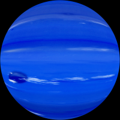
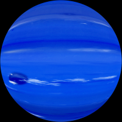

Neptune is the eighth and final planet in our solar system, which is the saved for the best. Obviously Neptune is the farthest planet from the sun as it is the last, but did you know that Neptune does so by giving a huge 4.498 billion km of distance! No wonder Neptune has to take 165 years to fully orbit the sun, by then, 3 generations have already gone by here on Earth. With the dark blue colours that Neptune brightly shows off, it was named after the Roman god of seas and has the symbol ♆, which represent the god's trident. The amount of volume Neptune takes up in space is 6.254×1013 km3 and weighs 1.0243×1026 kg, putting Neptune at the 4th largest planet. Close to Saturn, Neptune has the gravitational pull of 11.15 m/s2 which isn't really far from Earth's either. As mentioned before, Neptune has that shiny dark blue colour to it and that is pretty much all you see throughout Neptune along with some other shades here and there. With Neptune being the very last planet in the solar system, it receives the least light out of all the other planets, therefore being the coldest planet. On average Neptune experiences temperatures of 72K and the lowest of 55K, that's 3 times as cold from the coldest places there is on Earth!
 

Wikipedia, The Free Encyclopedia. (September 5, 2016) Neptune. Retrieved September 26, 2016, from https://en.wikipedia.org/wiki/Neptune
Digital Image: Neptune, ~https://upload.wikimedia.org/wikipedia/commons/5/56/Neptune_Full.jpg~ Retrieved September 26, 2016.
Digital Image: Neptune Planet, ~http://img14.deviantart.net/12fd/i/2013/273/c/e/neptune_stock_image_by_uxmal750ad-d6omt6u.jpg~ Retrieved September 26, 2016.